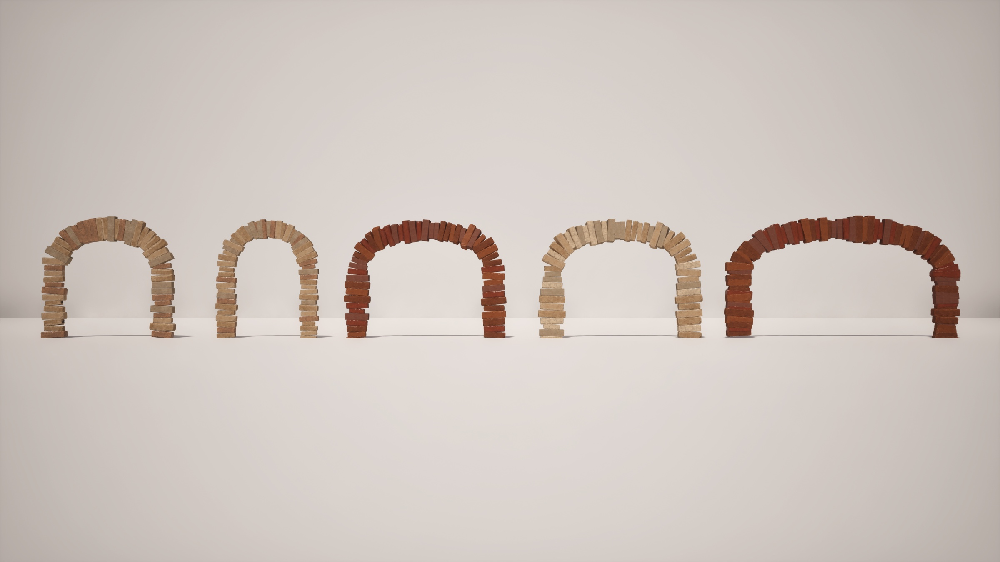
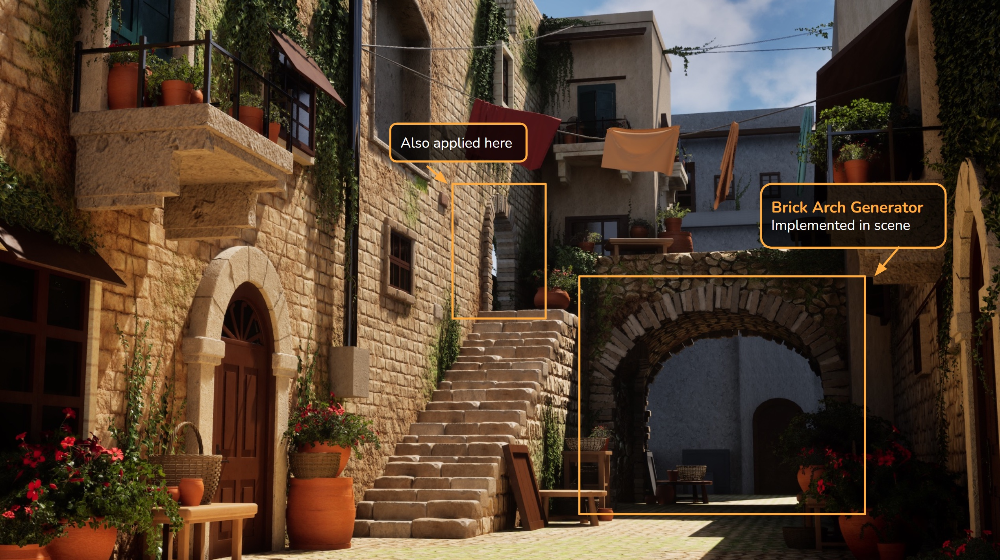

Placing bricks one by one along an arch was slow and repetitive, and hand-placed arches all looked the same. I needed many arch shapes with natural silhouette variation for the alleyway's doorways and bridge.
The Tool
The artist-facing panel in Maya: pick an arch curve and a block, set layout and randomness, then rebuild.
2x speed
Draw any curve as the arch shape; pick the block mesh to place
Block count, auto-fit block size, mortar gap, wedge taper
Seed, position and rotation jitter, scale and depth variation, face flips
Auto rebuild on change, one-click Build / Rebuild, Reset to Defaults
Works on Existing Geometry
The tool is not limited to free-standing arches. Selecting the edge of an existing arch and converting it to a curve gives the tool a path to build along, so the same controls work on openings already modelled into walls.
Applied in Scene

How I Built It
I designed the tool's behavior and controls, and used an LLM to help write the Maya Python. I tested each version in Maya and adjusted it until the output worked in the scene.